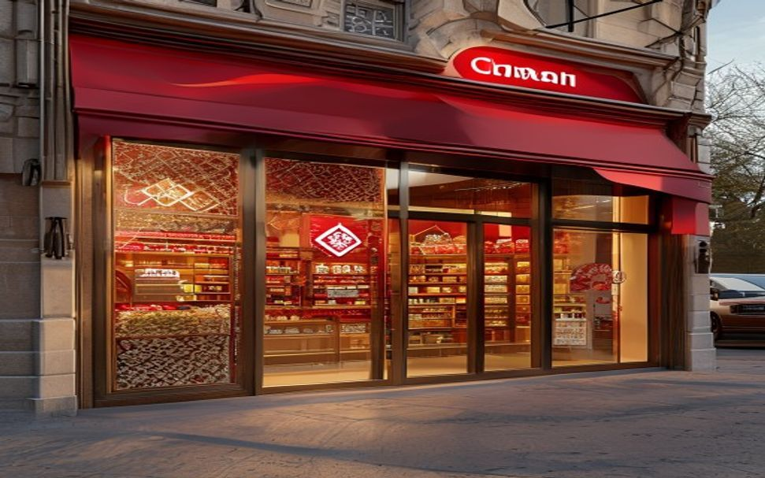
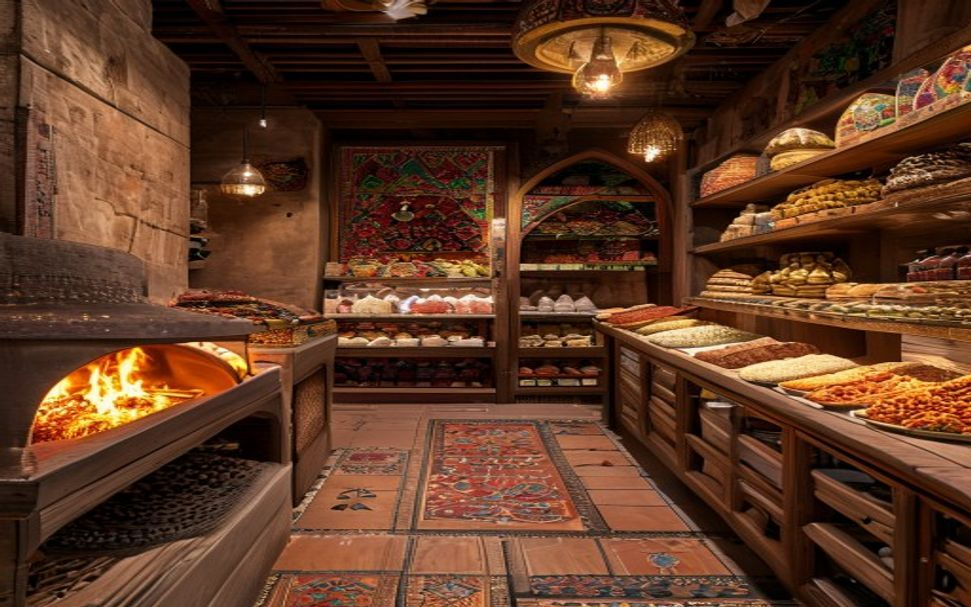

Format hybride: flagship + magasins compacts
Un magasin flagship à cycle de production complet servant d'aimant à trafic et de vitrine de marque. Un réseau de magasins compacts à proximité du métro pour assurer la croissance.


Flagship 300 m²
Cycle de production intégré. Atelier de boucherie, boulangerie-tandoor, traiteur chaud préparé sur place, espace salon de thé, exclusivité ouzbèke. Emplacement premium à proximité d'une mosquée.
Compact 200 m²
Boulangerie-tandoor sur place, vitrines de traiteur approvisionnées par la cuisine centrale (lancement Y2). 5 à 10 minutes à pied du métro ou du MCC. Implantation au cœur de quartiers résidentiels denses.
Central kitchen
À l'horizon Y2, nous lancerons une cuisine centrale de production. Elle réduit de moitié le CapEx et la masse salariale des magasins compacts, tout en garantissant un standard de qualité unifié sur l'ensemble du réseau.